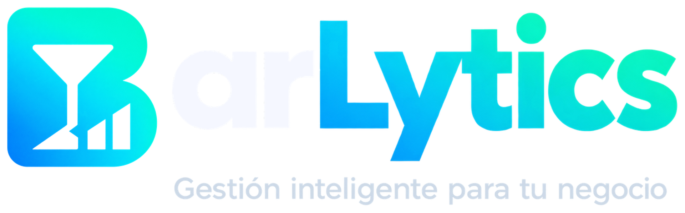

BarLytics necesita JavaScript habilitado para ejecutar la aplicación. Puedes consultar la información pública en software para bares, funcionalidades, planes, descargas, contacto y preguntas frecuentes.